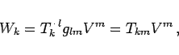
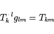
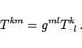
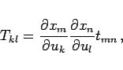
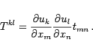

Inhalt Index DeskTop Bronstein

 Lineare Algebra Tensoren Tensoren in krummlinigen Koordinatensystemen Kovariante, kontravariante und gemischte Koordinaten von Tensoren 2. Stufe
Lineare Algebra Tensoren Tensoren in krummlinigen Koordinatensystemen Kovariante, kontravariante und gemischte Koordinaten von Tensoren 2. Stufe


Setzt man in (4.94b) für Vl die Beziehung Vl=glmVm ein, so ergibt sich
|  | (4.95a) |
wenn man
|  | (4.95b) |
setzt. Die Tkm heißen rein kovariante Koordinaten des Tensors T , weil beide Indizes kovariant stehen. Analog erhält man die rein kontravarianten Koordinaten
|  | (4.96) |
Explizite Darstellungen:
|  | (4.97a) |
|  | (4.97b) |